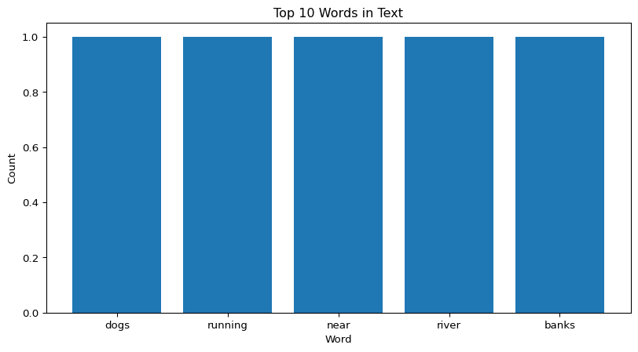

[Synset('dog.n.01'),
Synset('frump.n.01'),
Synset('dog.n.03'),
Synset('cad.n.01'),
Synset('frank.n.02'),
Synset('pawl.n.01'),
Synset('andiron.n.01'),
Synset('chase.v.01')]NLTK
2025-11-03
for loop and the zip() function, create a dictionary with the words as keys. Then, using the .T method, convert it into a pd.DataFrame.Tokenization = breaking text into meaningful units (tokens).
.split()re.split()Let’s see how different methods handle punctuation, contractions, and abbreviations.
| Method | Strengths | Weaknesses |
|---|---|---|
.split() |
Very fast, built-in | Breaks on whitespace (or “,”, etc.) only |
re.split() |
Customizable | regex = hard; can misparse |
nltk.word_tokenize() |
Linguistically aware | Slower; needs nltk installed |
import nltk
from nltk.tokenize import sent_tokenize
text2 = """President Pitzer, Mr. Vice President, Governor Connally, ladies and gentlemen: I am delighted to be here today. We meet in an hour of change and challenge."""
word_tokenize(text2)[0:10]
print("\n --------------------- \n")
sent_tokenize(text2)[0:1]wn.synsets(*word*)[Synset('dog.n.01'),
Synset('frump.n.01'),
Synset('dog.n.03'),
Synset('cad.n.01'),
Synset('frank.n.02'),
Synset('pawl.n.01'),
Synset('andiron.n.01'),
Synset('chase.v.01')].definition()Synset('dog.n.01'): a member of the genus Canis (probably descended from the common wolf) that has been domesticated by man since prehistoric times; occurs in many breeds
Synset('frump.n.01'): a dull unattractive unpleasant girl or woman
Synset('dog.n.03'): informal term for a man
Synset('cad.n.01'): someone who is morally reprehensible
Synset('frank.n.02'): a smooth-textured sausage of minced beef or pork usually smoked; often served on a bread roll
Synset('pawl.n.01'): a hinged catch that fits into a notch of a ratchet to move a wheel forward or prevent it from moving backward
Synset('andiron.n.01'): metal supports for logs in a fireplace
Synset('chase.v.01'): go after with the intent to catch.examples()Synset('dog.n.01'): ['the dog barked all night']
Synset('frump.n.01'): ['she got a reputation as a frump', "she's a real dog"]
Synset('dog.n.03'): ['you lucky dog']
Synset('cad.n.01'): ['you dirty dog']
Synset('frank.n.02'): []
Synset('pawl.n.01'): []
Synset('andiron.n.01'): ['the andirons were too hot to touch']
Synset('chase.v.01'): ['The policeman chased the mugger down the alley', 'the dog chased the rabbit'].lemmas()Synset('dog.n.01'): [Lemma('dog.n.01.dog'), Lemma('dog.n.01.domestic_dog'), Lemma('dog.n.01.Canis_familiaris')]
Synset('frump.n.01'): [Lemma('frump.n.01.frump'), Lemma('frump.n.01.dog')]
Synset('dog.n.03'): [Lemma('dog.n.03.dog')]
Synset('cad.n.01'): [Lemma('cad.n.01.cad'), Lemma('cad.n.01.bounder'), Lemma('cad.n.01.blackguard'), Lemma('cad.n.01.dog'), Lemma('cad.n.01.hound'), Lemma('cad.n.01.heel')]
Synset('frank.n.02'): [Lemma('frank.n.02.frank'), Lemma('frank.n.02.frankfurter'), Lemma('frank.n.02.hotdog'), Lemma('frank.n.02.hot_dog'), Lemma('frank.n.02.dog'), Lemma('frank.n.02.wiener'), Lemma('frank.n.02.wienerwurst'), Lemma('frank.n.02.weenie')]
Synset('pawl.n.01'): [Lemma('pawl.n.01.pawl'), Lemma('pawl.n.01.detent'), Lemma('pawl.n.01.click'), Lemma('pawl.n.01.dog')]
Synset('andiron.n.01'): [Lemma('andiron.n.01.andiron'), Lemma('andiron.n.01.firedog'), Lemma('andiron.n.01.dog'), Lemma('andiron.n.01.dog-iron')]
Synset('chase.v.01'): [Lemma('chase.v.01.chase'), Lemma('chase.v.01.chase_after'), Lemma('chase.v.01.trail'), Lemma('chase.v.01.tail'), Lemma('chase.v.01.tag'), Lemma('chase.v.01.give_chase'), Lemma('chase.v.01.dog'), Lemma('chase.v.01.go_after'), Lemma('chase.v.01.track')]['chase', 'chase_after', 'trail', 'tail', 'tag', 'give_chase', 'dog', 'go_after', 'track']
[][Synset('pursue.v.02')]
[Synset('tree.v.03'), Synset('hound.v.01'), Synset('run_down.v.07'), Synset('quest.v.02')][]
[]Lemma names: ['run', 'tally']
Definition: a score in baseball made by a runner touching all four bases safely
Examples: ['the Yankees scored 3 runs in the bottom of the 9th', 'their first tally came in the 3rd inning']Hypernyms: [Synset('domestic_animal.n.01'), Synset('canine.n.02')]
Hyponyms: [Synset('leonberg.n.01'), Synset('cur.n.01'), Synset('pug.n.01'), Synset('dalmatian.n.02'), Synset('lapdog.n.01'), Synset('pooch.n.01'), Synset('spitz.n.01'), Synset('basenji.n.01'), Synset('griffon.n.02'), Synset('great_pyrenees.n.01'), Synset('poodle.n.01'), Synset('toy_dog.n.01'), Synset('mexican_hairless.n.01'), Synset('puppy.n.01'), Synset('working_dog.n.01'), Synset('hunting_dog.n.01'), Synset('newfoundland.n.01'), Synset('corgi.n.01')]
Part Meronyms: [Synset('flag.n.07')]0.22.0281482472922856{Synset('saluki.n.01'), Synset('terrier.n.01'), Synset('sussex_spaniel.n.01'), Synset('chow.n.03'), Synset('irish_setter.n.01'), Synset('weimaraner.n.01'), Synset('miniature_schnauzer.n.01'), Synset('keeshond.n.01'), Synset('king_charles_spaniel.n.01'), Synset('labrador_retriever.n.01'), Synset('shetland_sheepdog.n.01'), Synset('skye_terrier.n.01'), Synset('mastiff.n.01'), Synset('newfoundland.n.01'), Synset('bloodhound.n.01'), Synset('irish_water_spaniel.n.01'), Synset('cairn.n.02'), Synset('setter.n.02'), Synset('norwich_terrier.n.01'), Synset('great_dane.n.01'), Synset('boarhound.n.01'), Synset('clumber.n.01'), Synset('foxhound.n.01'), Synset('kuvasz.n.01'), Synset('water_dog.n.02'), Synset('standard_schnauzer.n.01'), Synset('italian_greyhound.n.01'), Synset('airedale.n.01'), Synset('bulldog.n.01'), Synset('welsh_terrier.n.01'), Synset('dandie_dinmont.n.01'), Synset('maltese_dog.n.01'), Synset('kelpie.n.02'), Synset('brabancon_griffon.n.01'), Synset('boxer.n.04'), Synset('watchdog.n.02'), Synset('spaniel.n.01'), Synset('blenheim_spaniel.n.01'), Synset('brittany_spaniel.n.01'), Synset('retriever.n.01'), Synset('irish_wolfhound.n.01'), Synset('toy_dog.n.01'), Synset('eskimo_dog.n.01'), Synset('borzoi.n.01'), Synset('yorkshire_terrier.n.01'), Synset('bouvier_des_flandres.n.01'), Synset('cocker_spaniel.n.01'), Synset('dachshund.n.01'), Synset('giant_schnauzer.n.01'), Synset('bull_mastiff.n.01'), Synset('pooch.n.01'), Synset('dalmatian.n.02'), Synset('bernese_mountain_dog.n.01'), Synset('toy_manchester.n.01'), Synset('tibetan_mastiff.n.01'), Synset('pinscher.n.01'), Synset('miniature_pinscher.n.01'), Synset('english_setter.n.01'), Synset('border_terrier.n.01'), Synset('staghound.n.01'), Synset('schipperke.n.01'), Synset('coonhound.n.01'), Synset('clydesdale_terrier.n.01'), Synset('greyhound.n.01'), Synset('pariah_dog.n.01'), Synset('irish_terrier.n.01'), Synset('police_dog.n.01'), Synset('welsh_springer_spaniel.n.01'), Synset('staffordshire_bullterrier.n.01'), Synset('german_short-haired_pointer.n.01'), Synset('housedog.n.01'), Synset('attack_dog.n.01'), Synset('malamute.n.01'), Synset('mexican_hairless.n.01'), Synset('malinois.n.01'), Synset('wirehair.n.01'), Synset('siberian_husky.n.01'), Synset('field_spaniel.n.01'), Synset('afghan_hound.n.01'), Synset('golden_retriever.n.01'), Synset('seeing_eye_dog.n.01'), Synset('basset.n.01'), Synset('shepherd_dog.n.01'), Synset('australian_terrier.n.01'), Synset('miniature_poodle.n.01'), Synset('corgi.n.01'), Synset('japanese_spaniel.n.01'), Synset('bluetick.n.01'), Synset('standard_poodle.n.01'), Synset('boston_bull.n.01'), Synset('feist.n.01'), Synset('toy_spaniel.n.01'), Synset('doberman.n.01'), Synset('entlebucher.n.01'), Synset('poodle.n.01'), Synset('griffon.n.03'), Synset('wire-haired_fox_terrier.n.01'), Synset('chihuahua.n.03'), Synset('silky_terrier.n.01'), Synset('water_spaniel.n.01'), Synset('lakeland_terrier.n.01'), Synset('cur.n.01'), Synset('spitz.n.01'), Synset('lapdog.n.01'), Synset('great_pyrenees.n.01'), Synset('flat-coated_retriever.n.01'), Synset('fox_terrier.n.01'), Synset('manchester_terrier.n.01'), Synset('wolfhound.n.01'), Synset('walker_hound.n.01'), Synset('french_bulldog.n.01'), Synset('ibizan_hound.n.01'), Synset('komondor.n.01'), Synset('griffon.n.02'), Synset('bullterrier.n.01'), Synset('tibetan_terrier.n.01'), Synset('vizsla.n.01'), Synset('lhasa.n.02'), Synset('sporting_dog.n.01'), Synset('smooth-haired_fox_terrier.n.01'), Synset('rat_terrier.n.01'), Synset('harrier.n.02'), Synset('papillon.n.01'), Synset('soft-coated_wheaten_terrier.n.01'), Synset('working_dog.n.01'), Synset('basenji.n.01'), Synset('rottweiler.n.01'), Synset('sennenhunde.n.01'), Synset('border_collie.n.01'), Synset('black-and-tan_coonhound.n.01'), Synset('briard.n.01'), Synset('english_springer.n.01'), Synset('coondog.n.01'), Synset('pointer.n.04'), Synset('greater_swiss_mountain_dog.n.01'), Synset('beagle.n.01'), Synset('old_english_sheepdog.n.01'), Synset('pembroke.n.01'), Synset('curly-coated_retriever.n.01'), Synset('saint_bernard.n.01'), Synset('cardigan.n.02'), Synset('redbone.n.01'), Synset('schnauzer.n.01'), Synset('large_poodle.n.01'), Synset('pug.n.01'), Synset('whippet.n.01'), Synset('rhodesian_ridgeback.n.01'), Synset('bedlington_terrier.n.01'), Synset('collie.n.01'), Synset('belgian_sheepdog.n.01'), Synset('gordon_setter.n.01'), Synset('otterhound.n.01'), Synset('pekinese.n.01'), Synset('hound.n.01'), Synset('affenpinscher.n.01'), Synset('seizure-alert_dog.n.01'), Synset('sausage_dog.n.01'), Synset('chesapeake_bay_retriever.n.01'), Synset('samoyed.n.03'), Synset('courser.n.03'), Synset('toy_poodle.n.01'), Synset('toy_terrier.n.01'), Synset('hunting_dog.n.01'), Synset('pomeranian.n.01'), Synset('norfolk_terrier.n.01'), Synset('scotch_terrier.n.01'), Synset('groenendael.n.01'), Synset('puppy.n.01'), Synset('bird_dog.n.01'), Synset('sealyham_terrier.n.01'), Synset('west_highland_white_terrier.n.01'), Synset('english_toy_spaniel.n.01'), Synset('english_foxhound.n.01'), Synset('sled_dog.n.01'), Synset('shih-tzu.n.01'), Synset('liver-spotted_dalmatian.n.01'), Synset('american_staffordshire_terrier.n.01'), Synset('kerry_blue_terrier.n.01'), Synset('american_foxhound.n.01'), Synset('american_water_spaniel.n.01'), Synset('german_shepherd.n.01'), Synset('leonberg.n.01'), Synset('hearing_dog.n.01'), Synset('scottish_deerhound.n.01'), Synset('norwegian_elkhound.n.01'), Synset('plott_hound.n.01'), Synset('appenzeller.n.01'), Synset('springer_spaniel.n.01'), Synset('guide_dog.n.01')}a motor vehicle with four wheels; usually propelled by an internal combustion engine
['he needs a car to get to work']
[Synset('motor_vehicle.n.01')]
[Synset('hot_rod.n.01'), Synset('minicar.n.01'), Synset('compact.n.03'), Synset('cruiser.n.01'), Synset('hatchback.n.01'), Synset('sedan.n.01'), Synset('sports_car.n.01'), Synset('hardtop.n.01'), Synset('stock_car.n.01'), Synset('model_t.n.01'), Synset('cab.n.03'), Synset('racer.n.02'), Synset('minivan.n.01'), Synset('limousine.n.01'), Synset('used-car.n.01'), Synset('bus.n.04'), Synset('sport_utility.n.01'), Synset('horseless_carriage.n.01'), Synset('ambulance.n.01'), Synset('roadster.n.01'), Synset('convertible.n.01'), Synset('gas_guzzler.n.01'), Synset('subcompact.n.01'), Synset('touring_car.n.01'), Synset('beach_wagon.n.01'), Synset('coupe.n.01'), Synset('pace_car.n.01'), Synset('stanley_steamer.n.01'), Synset('jeep.n.01'), Synset('electric.n.01'), Synset('loaner.n.02')]——- TEXT TO SEMANTIC SIMILARITY ———
['dog', 'run', 'near', 'river', 'bank'][[Synset('dog.n.01'),
Synset('frump.n.01'),
Synset('dog.n.03'),
Synset('cad.n.01'),
Synset('frank.n.02'),
Synset('pawl.n.01'),
Synset('andiron.n.01'),
Synset('chase.v.01')],
[Synset('run.n.01'),
Synset('test.n.05'),
Synset('footrace.n.01'),
Synset('streak.n.01'),
Synset('run.n.05'),
Synset('run.n.06'),
Synset('run.n.07'),
Synset('run.n.08'),
Synset('run.n.09'),
Synset('run.n.10'),
Synset('rivulet.n.01'),
Synset('political_campaign.n.01'),
Synset('run.n.13'),
Synset('discharge.n.06'),
Synset('run.n.15'),
Synset('run.n.16'),
Synset('run.v.01'),
Synset('scat.v.01'),
Synset('run.v.03'),
Synset('operate.v.01'),
Synset('run.v.05'),
Synset('run.v.06'),
Synset('function.v.01'),
Synset('range.v.01'),
Synset('campaign.v.01'),
Synset('play.v.18'),
Synset('run.v.11'),
Synset('tend.v.01'),
Synset('run.v.13'),
Synset('run.v.14'),
Synset('run.v.15'),
Synset('run.v.16'),
Synset('prevail.v.03'),
Synset('run.v.18'),
Synset('run.v.19'),
Synset('carry.v.15'),
Synset('run.v.21'),
Synset('guide.v.05'),
Synset('run.v.23'),
Synset('run.v.24'),
Synset('run.v.25'),
Synset('run.v.26'),
Synset('run.v.27'),
Synset('run.v.28'),
Synset('run.v.29'),
Synset('run.v.30'),
Synset('run.v.31'),
Synset('run.v.32'),
Synset('run.v.33'),
Synset('run.v.34'),
Synset('ply.v.03'),
Synset('hunt.v.01'),
Synset('race.v.02'),
Synset('move.v.13'),
Synset('melt.v.01'),
Synset('ladder.v.01'),
Synset('run.v.41')],
[Synset('approach.v.01'),
Synset('near.a.01'),
Synset('near.s.01'),
Synset('near.s.02'),
Synset('cheeseparing.s.01'),
Synset('dear.s.02'),
Synset('approximate.s.02'),
Synset('near.r.01'),
Synset('about.r.07')],
[Synset('river.n.01')],
[Synset('bank.n.01'),
Synset('depository_financial_institution.n.01'),
Synset('bank.n.03'),
Synset('bank.n.04'),
Synset('bank.n.05'),
Synset('bank.n.06'),
Synset('bank.n.07'),
Synset('savings_bank.n.02'),
Synset('bank.n.09'),
Synset('bank.n.10'),
Synset('bank.v.01'),
Synset('bank.v.02'),
Synset('bank.v.03'),
Synset('bank.v.04'),
Synset('bank.v.05'),
Synset('deposit.v.02'),
Synset('bank.v.07'),
Synset('trust.v.01')]]dog.n.01 cat.n.01 0.8571428571428571
dog.n.01 bank.n.09 0.47058823529411764
cat.n.01 bank.n.09 0.36363636363636365'dogs' (default POS) -> 'dog'
'running' (verb) -> 'run'
'better' (adjective) -> 'good'
'leaves' (noun) -> 'leaf'
'leaves' (verb) -> 'leave'
## Frequency Distributions
::: {#19516c20 .cell execution_count=17}
::: {.cell-output .cell-output-display execution_count=17}
```{=html}
<div>
<style scoped>
.dataframe tbody tr th:only-of-type {
vertical-align: middle;
}
.dataframe tbody tr th {
vertical-align: top;
}
.dataframe thead th {
text-align: right;
}
</style>
<table border="1" class="dataframe">
<thead>
<tr style="text-align: right;">
<th></th>
<th>word</th>
<th>count</th>
</tr>
</thead>
<tbody>
<tr>
<th>0</th>
<td>dogs</td>
<td>1</td>
</tr>
<tr>
<th>1</th>
<td>running</td>
<td>1</td>
</tr>
<tr>
<th>2</th>
<td>near</td>
<td>1</td>
</tr>
<tr>
<th>3</th>
<td>river</td>
<td>1</td>
</tr>
<tr>
<th>4</th>
<td>banks</td>
<td>1</td>
</tr>
</tbody>
</table>
</div>::: :::
{'you', "don't", 'only', 'these', "mustn't", 'shouldn', 'being', 'having', "couldn't", 'nor', "i'm", "shan't", 've', 'y', 'most', "i'll", 'after', 'mightn', 'a', "she'll", 'this', 'herself', 'them', 'those', 'too', 'an', 'am', "he's", 'so', 'while', 'below', 'is', "it'd", "mightn't", 'off', 'some', 'where', "wouldn't", 'have', 'did', "we'll", 'themselves', 'than', "they'll", 'between', 'both', 'does', 'hers', 'with', 'couldn', 'through', "it's", "he'd", 'we', 'll', "they've", 'no', 'not', "she'd", 'should', 'doing', 'there', 'when', 'ourselves', "they're", 'o', 'its', "i'd", 'wasn', "won't", 'be', 'their', 'ours', 'yourselves', "you'll", 'each', 'once', 'has', 'how', "hadn't", 'just', 'our', 're', 'because', 'other', 'to', 'were', 'under', 'mustn', "we'd", 'down', 'can', 'as', 'won', 'been', 'it', "you're", "she's", 'are', 'if', "wasn't", 'out', 'before', 'myself', 'd', 'but', "we've", "it'll", 'same', 'i', 'very', 'about', 'shan', 'm', 'that', 'the', 'my', 'was', 'his', 'own', 'they', 'on', "they'd", 'until', 'her', 'more', 'weren', 'aren', 's', 't', "you'd", 'all', 'him', "we're", 'needn', 'itself', "shouldn't", 'any', 'ma', "hasn't", "should've", 'whom', 'for', "that'll", 'of', 'against', 'who', 'here', 'yourself', 'haven', 'do', 'himself', 'and', 'which', 'by', 'isn', 'over', "i've", 'ain', 'at', "didn't", 'further', 'in', 'from', 'again', 'doesn', 'yours', 'such', 'or', 'will', 'few', 'into', "weren't", 'above', 'don', 'he', "he'll", 'she', "needn't", 'wouldn', 'now', 'hadn', "isn't", "you've", 'during', 'me', "haven't", 'up', "aren't", 'hasn', 'why', 'then', 'theirs', 'your', 'didn', 'had', "doesn't", 'what'}##Visualizing Word Counts
| POS | Lemma | Frequency | |
|---|---|---|---|
| students | NOUN | student | 5 |
| run | VERB | run | 3 |
| ran | VERB | run | 2 |
| roots | NOUN | root | 4 |
| languages | NOUN | language | 6 |